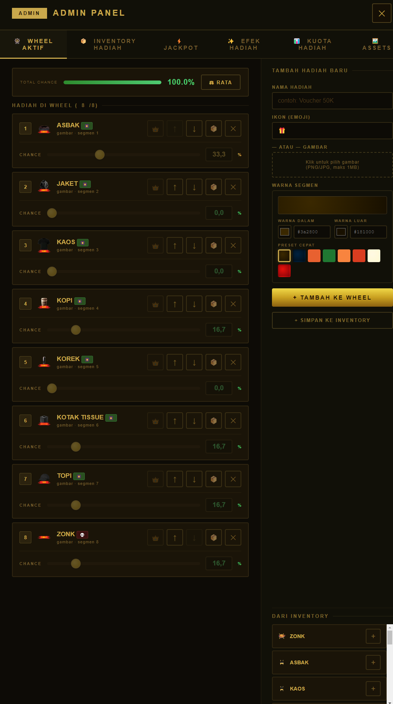
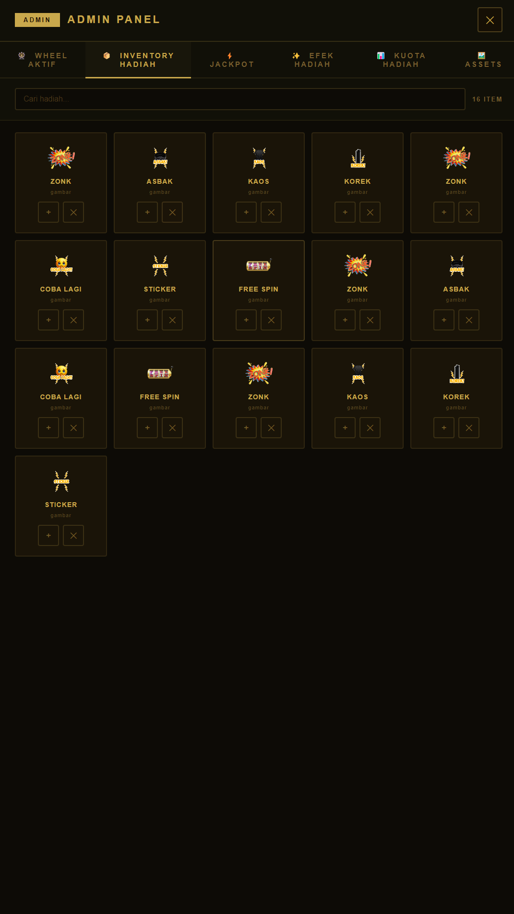
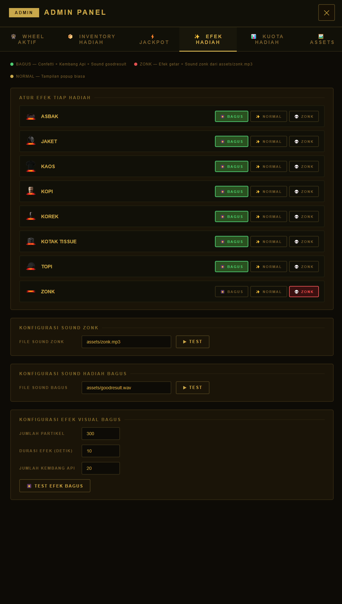
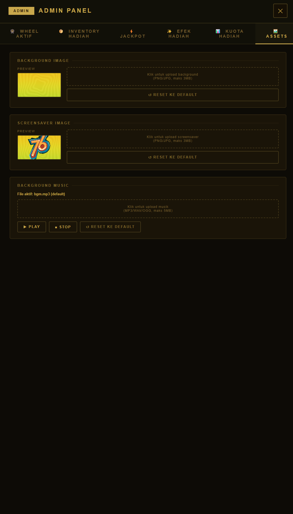
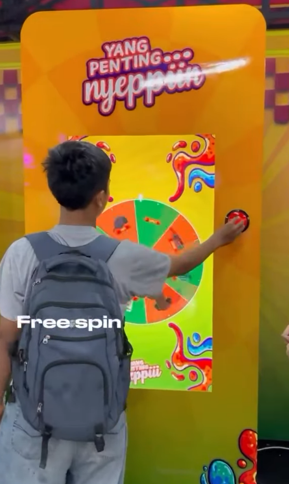
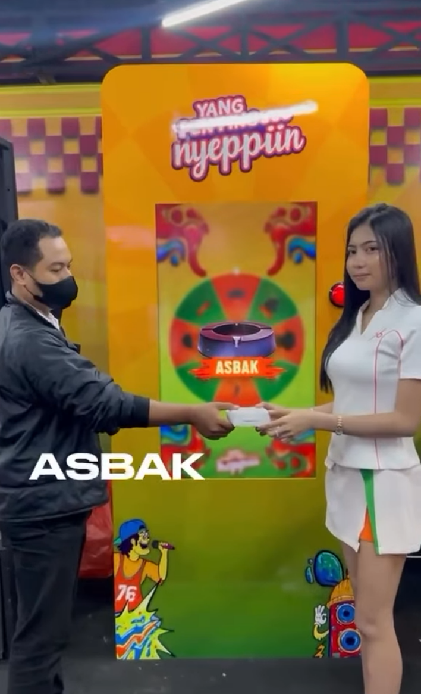

Super Spin — arcade spinning wheel software
Aplikasi desktop berbasis Electron untuk booth spinning wheel di acara — berjalan offline, fullscreen di layar arcade, dengan panel admin untuk mengatur hadiah, kuota, inventory, dan mode jackpot secara langsung di tempat acara.
- Peran
- Solo developer — desain aplikasi, logika permainan, panel admin, build & deployment
- Jenis
- Software desktop internal untuk operasional event, dipakai langsung di lokasi acara
- Status
- Dipakai aktif di acara-acara BLAST ID
- Kode
- Repositori privat — cuplikan representatif ada di bawah
Masalah
Booth spinning wheel di acara butuh aplikasi yang bisa dijalankan panitia non-teknis di lapangan, tanpa koneksi internet, dan tanpa risiko crash di tengah acara. Tiga kebutuhan utamanya:
- Kontrol penuh atas peluang hadiah. Panitia perlu bisa mengatur hadiah mana yang lebih sering keluar, dan membatasi jumlah hadiah tertentu supaya stok fisik tidak habis sebelum acara selesai.
- Harus tetap menarik saat idle. Booth yang layarnya diam terlalu lama terlihat sepi dan tidak mengundang pengunjung untuk mencoba.
- Harus bisa dikonfigurasi ulang di tempat. Nama hadiah, gambar, warna, dan musik sering berubah tiap acara — tidak realistis kalau harus edit kode dan build ulang tiap kali.
Pendekatan
Aplikasi dibangun sebagai satu window Electron fullscreen dengan dua
lapisan: tampilan publik (wheel, animasi, efek) yang
dilihat pengunjung, dan panel admin tersembunyi yang
hanya diakses panitia lewat kombinasi tombol tertentu. Semua konfigurasi
— daftar hadiah, kuota, gambar, musik, screensaver — disimpan di
localStorage, jadi panitia bisa mengubahnya langsung di
lokasi acara tanpa perlu developer hadir atau build ulang aplikasi.
Peluang menang dihitung dengan weighted random berbasis persentase
chance per hadiah. Di atas itu ada sistem kuota opsional yang
otomatis menghitung ulang chance berdasarkan sisa stok hadiah,
dan mode jackpot yang membatasi hasil hanya ke hadiah utama dengan rasio
tetap — dipakai saat sesi tertentu ingin hasilnya lebih terprediksi. Hadiah
yang sedang tidak dipakai di wheel tidak dihapus, tapi dipindah ke
inventory lokal supaya bisa ditarik kembali kapan saja tanpa dibuat ulang.
Fitur
Wheel dengan efek fisik
Animasi putaran dengan easing custom, efek suara tick yang mengikuti kecepatan, dan hasil akhir presisi ke satu slot hadiah.
Weighted random per hadiah
Tiap hadiah punya persentase peluang sendiri, bisa diatur manual atau diseimbangkan otomatis lewat panel admin.
Sistem kuota
Peluang otomatis dihitung ulang dari sisa stok tiap hadiah; hadiah yang kuotanya habis otomatis berhenti keluar.
Mode jackpot
Membatasi hasil hanya ke hadiah utama dengan rasio tetap antar dua pilihan, untuk sesi jackpot tertentu.
Panel admin di tempat
Tambah/ubah/hapus hadiah, atur warna, gambar, dan tipe efek (normal, hadiah spesial, atau zonk) tanpa menyentuh kode.
Inventory lokal
Hadiah yang sedang tidak aktif di wheel disimpan sebagai inventory, tinggal ditarik masuk kapan saja tanpa harus dibuat ulang.
Screensaver idle
Slideshow otomatis muncul saat wheel tidak disentuh, menarik perhatian pengunjung yang lewat booth.
Efek & suara kemenangan
Confetti dan fanfare untuk hadiah normal, efek berbeda untuk hadiah spesial dan untuk "zonk" (tidak menang).
Aset bisa diganti langsung
Background, musik latar, dan gambar screensaver bisa diunggah ulang dari panel admin, tersimpan lokal di aplikasi.
Kontrol keyboard & gamepad
Bisa dipicu lewat klik, spasi/enter, atau tombol gamepad — fleksibel sesuai perangkat yang dipasang di booth.
Tampilan







Teknologi
Dibangun sebagai satu file index.html tanpa framework
frontend, sengaja dijaga sederhana supaya mudah di-debug langsung di
lokasi acara tanpa proses build. Electron dipilih agar bisa berjalan
penuh offline dan di-package jadi installer atau .exe
portable yang tinggal dijalankan di PC arcade mana pun.
Beberapa keputusan teknis
nodeIntegration dimatikan dan komunikasi antara main
process dan halaman UI dibatasi lewat preload.js, supaya
aplikasi tetap aman meski kontennya sepenuhnya HTML/JS lokal.
const mainWindow = new BrowserWindow({ webPreferences: { nodeIntegration: false, contextIsolation: true, preload: path.join(__dirname, 'preload.js') } }); // preload.js — hanya expose satu event, tidak ada akses Node langsung ke UI contextBridge.exposeInMainWorld('electronAPI', { onFullscreenChange: (cb) => ipcRenderer.on('fullscreen-change', (_, val) => cb(val)) });
chance tiap hadiah dihitung ulang
proporsional dari sisa kuotanya, dan hadiah yang kuotanya habis
cukup difilter keluar dari kandidat undian — bukan dihapus dari
wheel, supaya tampilannya tetap konsisten.
function recalcChanceFromQuota() { // Hanya hitung dari hadiah yang kuotanya belum habis const total = activePrizes.reduce((sum, p) => { const q = quotaConfig.quotas[p.id] ?? 10; return sum + q; }, 0); activePrizes.forEach(p => { const q = quotaConfig.quotas[p.id] ?? 10; p.chance = total > 0 ? parseFloat(((q / total) * 100).toFixed(2)) : 0; }); saveActive(); }
weightedRandom(),
lalu animasi hanya menghitung sudut putaran menuju slot pemenang itu.
Hasil undian tidak pernah bergantung pada di mana wheel berhenti secara visual.
const winner = weightedRandom(); const padded = getPadded(); const slotIdx = padded.findIndex(p => p.id === winner.id); // Sudut target dihitung dari slot pemenang yang sudah pasti, // animasi hanya "mengejar" sudut ini dengan easing dan putaran ekstra const target = -(slotIdx * ARC + ARC / 2) - Math.PI / 2;
function showScreensaver(){ if (ssActive || ssHiding) return; if (adminOpen()) { scheduleIdle(); return; } if (popupOpen) { scheduleIdle(); return; } if (zonkOpen) { scheduleIdle(); return; } if (spinning) { scheduleIdle(); return; } // ...tampilkan screensaver }
Yang saya pelajari
Tantangan terbesarnya bukan menulis logika undiannya, tapi merancang aplikasi yang bisa dioperasikan panitia non-teknis di tengah keramaian acara — tanpa developer standby. Itu berarti setiap kemungkinan kesalahan input di panel admin harus ditangani dengan baik, dan setiap state (spinning, popup terbuka, admin terbuka) harus saling menghormati supaya tidak ada tampilan yang tabrakan di depan pengunjung.
Pelajaran lain: untuk software yang hidupnya di lapangan, kesederhanaan arsitektur (satu file, tanpa build step untuk debugging cepat) kadang lebih berharga daripada struktur kode yang "rapi" secara konvensional.
Catatan soal akses kode. Repositori bersifat privat. Cuplikan di halaman ini diambil langsung dari basis kode yang dipakai di acara-acara BLAST ID.